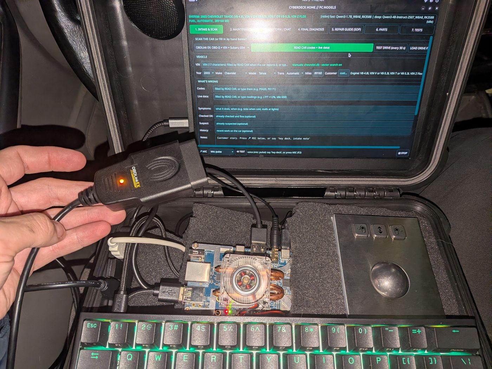
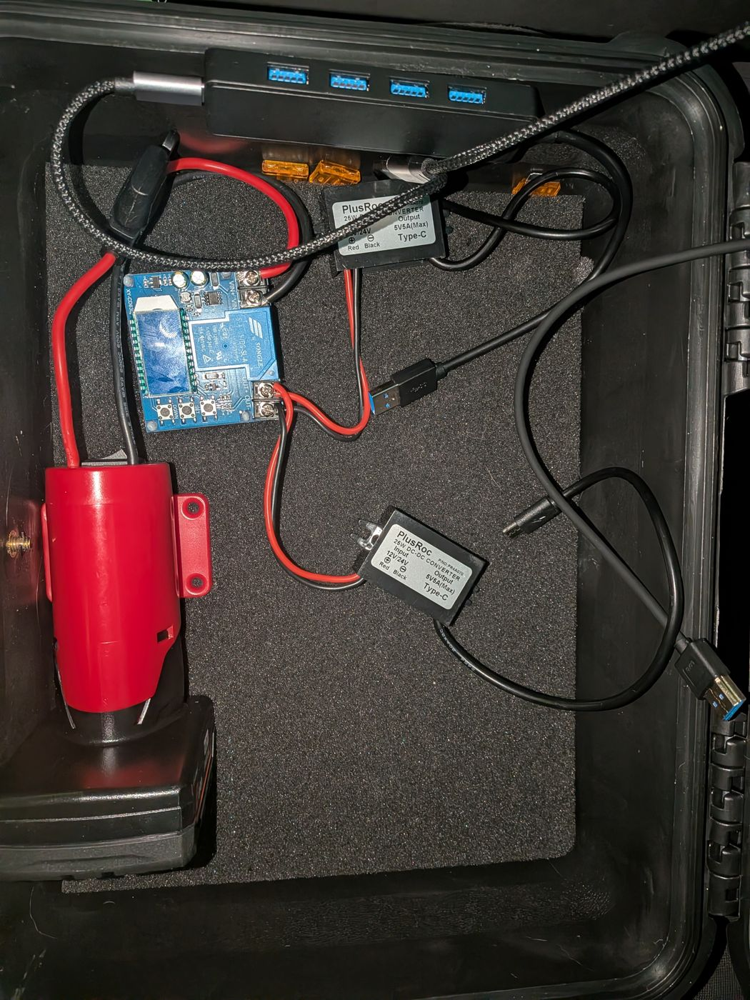
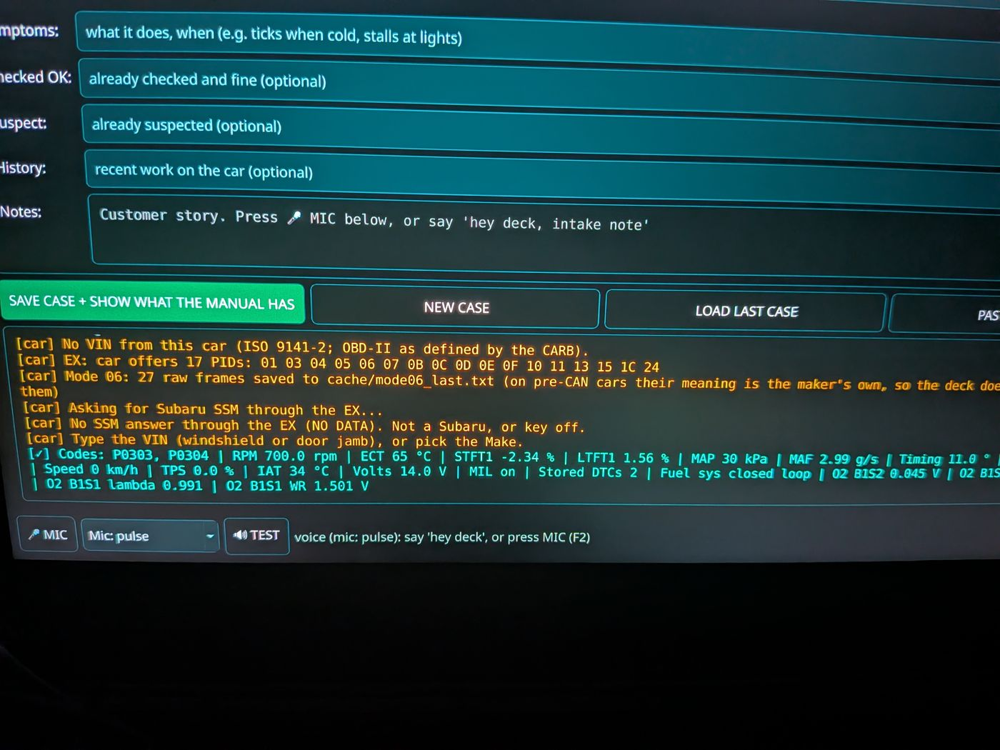
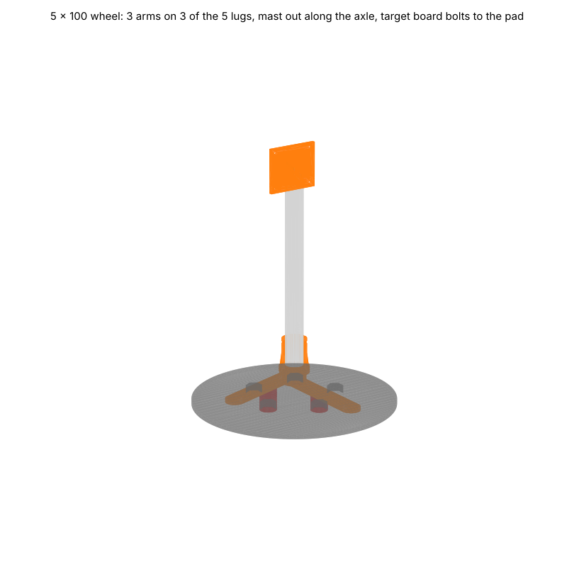
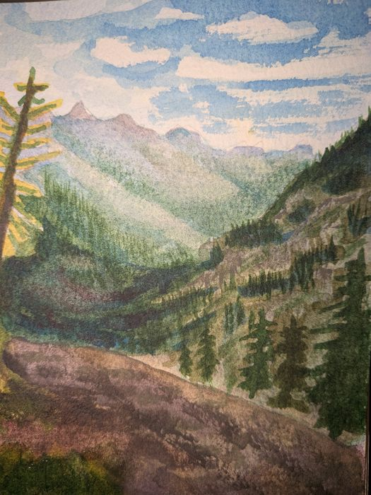
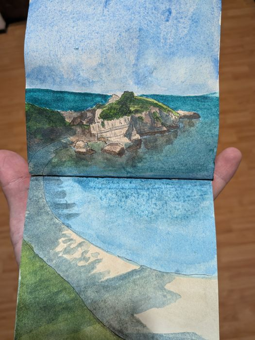
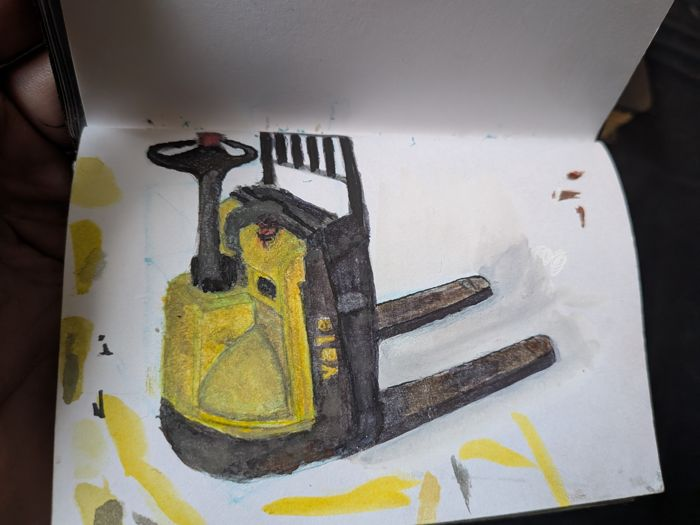
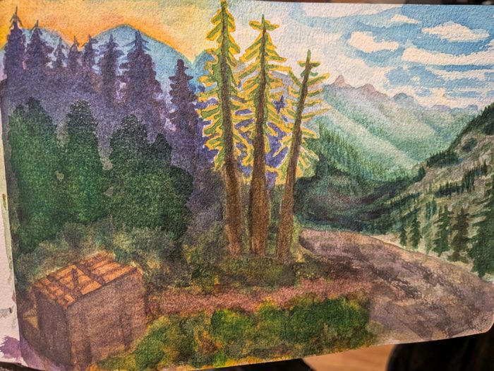
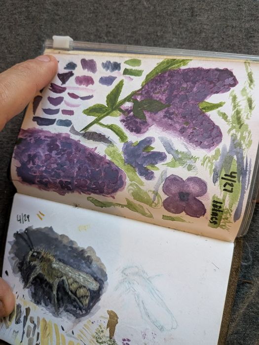

<title>Charlie Nolan</title>
<meta name="claude:viewport-fit-sides" content="cover">
<meta name="description" content="Charlie Nolan: mechanic in Shoreline, WA, and builder of open-source car diagnostic tools.">
<link rel="stylesheet" href="https://fonts.googleapis.com/css2?family=Bricolage+Grotesque:opsz,wght@12..96,600;12..96,800&family=Instrument+Sans:wght@400;500;600&family=JetBrains+Mono:wght@400;500&display=swap">
<style>
  /* Layout: a maker's spec sheet. Left-aligned single column, each project reads like a datasheet entry
     with a photo and a short table of real specs. Accent is anodized-aluminum blue, one warm tag color for status. */
  :root {
    --bg: #eef0f1;
    --paper: #fbfcfc;
    --fg: #141b22;
    --muted: #55606b;
    --rule: #cfd5da;
    --accent: #2453c7;
    --accent-soft: #dfe7fa;
    --tag: #b4530f;
    --display: "Bricolage Grotesque", "Arial Black", system-ui, sans-serif;
    --body: "Instrument Sans", "Helvetica Neue", Arial, sans-serif;
    --mono: "JetBrains Mono", ui-monospace, Menlo, Consolas, monospace;
  }
  @media (prefers-color-scheme: dark) {
    :root:not([data-theme="light"]) {
      --bg: #11161b; --paper: #182027; --fg: #e8ecef; --muted: #9aa6b1; --rule: #2c3640;
      --accent: #7fa4ff; --accent-soft: #1f2c4a; --tag: #f0a060; color-scheme: dark;
    }
  }
  :root[data-theme="dark"] {
    --bg: #11161b; --paper: #182027; --fg: #e8ecef; --muted: #9aa6b1; --rule: #2c3640;
    --accent: #7fa4ff; --accent-soft: #1f2c4a; --tag: #f0a060; color-scheme: dark;
  }
  @media (prefers-reduced-motion: reduce) { * { transition: none !important; } }

  body { background: var(--bg); color: var(--fg); font-family: var(--body); font-size: 17px; line-height: 1.55; }
  .wrap { max-width: 880px; margin: 0 auto; padding-left: max(16px, env(safe-area-inset-left, 0px)); padding-right: max(16px, env(safe-area-inset-right, 0px)); }
  h1, h2, h3 { font-family: var(--display); line-height: 1.05; margin: 0; text-wrap: balance; }
  h2 { font-size: clamp(1.8rem, 5vw, 2.4rem); font-weight: 800; letter-spacing: -.01em; }
  h3 { font-size: 1.5rem; font-weight: 800; }
  p { margin: 0; max-width: 62ch; }
  a { color: var(--accent); text-underline-offset: 3px; }
  a:focus-visible, button:focus-visible { outline: 3px solid var(--accent); outline-offset: 2px; }
  .label { font-family: var(--mono); font-size: .78rem; letter-spacing: .08em; text-transform: uppercase; color: var(--muted); }
  section { padding-block: 48px; border-top: 1px solid var(--rule); display: grid; gap: 20px; }

  /* header */
  header .wrap { display: flex; justify-content: space-between; align-items: baseline; gap: 8px 20px; flex-wrap: wrap; padding-block: 20px; }
  .name { font-family: var(--display); font-weight: 800; font-size: 1.3rem; text-decoration: none; color: var(--fg); }
  nav { display: flex; flex-wrap: wrap; gap: 4px 16px; font-size: .95rem; }
  nav a { color: var(--muted); text-decoration: none; }
  nav a:hover { color: var(--accent); }

  /* hero */
  .hero { border-top: 0; padding-block: 32px 48px; gap: 18px; }
  .hero h1 { font-size: clamp(2.5rem, 8vw, 4.4rem); font-weight: 800; letter-spacing: -.02em; }
  .hero h1 em { font-style: normal; color: var(--accent); }
  .lede { font-size: 1.2rem; }
  .facts { display: flex; flex-wrap: wrap; gap: 8px; padding: 0; margin: 0; list-style: none; }
  .facts li { font-family: var(--mono); font-size: .82rem; background: var(--paper); border: 1px solid var(--rule); padding: 4px 10px; }

  /* projects: datasheet entries */
  .project { display: grid; grid-template-columns: minmax(0, 1fr) minmax(0, 1.1fr); gap: 24px; align-items: start; background: var(--paper); border: 1px solid var(--rule); padding: 20px; }
  .project > * { min-width: 0; }
  .project .shot { display: grid; gap: 8px; }
  .project img { width: 100%; height: auto; display: block; border: 1px solid var(--rule); background: var(--bg); }
  .project .thumbs { display: grid; grid-template-columns: 1fr 1fr; gap: 8px; }
  .project .thumbs img { aspect-ratio: 4 / 3; object-fit: cover; }
  .project .copy { display: grid; gap: 14px; align-content: start; }
  .status { justify-self: start; font-family: var(--mono); font-size: .75rem; letter-spacing: .06em; text-transform: uppercase; color: var(--tag); border: 1px solid currentColor; padding: 2px 8px; }
  .spec { width: 100%; border-collapse: collapse; font-size: .92rem; }
  .spec th, .spec td { text-align: left; padding: 7px 0; border-top: 1px solid var(--rule); vertical-align: top; }
  .spec th { font-family: var(--mono); font-weight: 400; font-size: .76rem; letter-spacing: .06em; text-transform: uppercase; color: var(--muted); width: 38%; padding-right: 12px; }
  .spec td { font-variant-numeric: tabular-nums; }
  .links { display: flex; flex-wrap: wrap; gap: 8px 18px; font-weight: 600; }
  @media (max-width: 700px) { .project { grid-template-columns: 1fr; } }

  /* github */
  .repos { display: grid; grid-template-columns: repeat(2, minmax(0, 1fr)); gap: 12px; }
  .repo { display: grid; gap: 6px; padding: 16px; border: 1px solid var(--rule); background: var(--paper); text-decoration: none; color: var(--fg); }
  .repo:hover { border-color: var(--accent); }
  .repo b { font-family: var(--mono); font-weight: 500; color: var(--accent); }
  .repo span { color: var(--muted); font-size: .93rem; }
  @media (max-width: 560px) { .repos { grid-template-columns: 1fr; } }

  /* galleries */
  .gallery { display: grid; grid-template-columns: repeat(3, minmax(0, 1fr)); gap: 10px; }
  .gallery figure { margin: 0; display: grid; gap: 6px; }
  .gallery img { width: 100%; aspect-ratio: 1; object-fit: cover; display: block; }
  .gallery figcaption { font-size: .85rem; color: var(--muted); }
  @media (max-width: 560px) { .gallery { grid-template-columns: repeat(2, minmax(0, 1fr)); } }
  .empty { border: 1px dashed var(--rule); padding: 28px 20px; color: var(--muted); display: grid; gap: 6px; }
  .empty b { color: var(--fg); font-weight: 600; }

  /* blog */
  .posts { display: grid; gap: 0; padding: 0; margin: 0; list-style: none; }
  .posts li { display: grid; grid-template-columns: 7.5em 1fr; gap: 12px; padding-block: 12px; border-top: 1px solid var(--rule); }
  .posts time { font-family: var(--mono); font-size: .85rem; color: var(--muted); padding-top: 2px; }
  @media (max-width: 480px) { .posts li { grid-template-columns: 1fr; gap: 2px; } }

  /* mechanic band */
  .shop { background: var(--accent-soft); border: 1px solid var(--rule); padding: 24px; display: grid; gap: 12px; }
  .btn { justify-self: start; display: inline-block; background: var(--accent); color: var(--paper); font-weight: 600; padding: 10px 18px; text-decoration: none; }

  /* interests (generated from the Obsidian vault) */
  .icards { display: grid; grid-template-columns: repeat(auto-fill, minmax(min(100%, 250px), 1fr)); gap: 12px; }
  .card { display: grid; gap: 8px; align-content: start; padding: 16px; background: var(--paper); border: 1px solid var(--rule); text-decoration: none; color: var(--fg); min-width: 0; }
  .card:hover { border-color: var(--accent); }
  .card h3 { font-size: 1.2rem; }
  .card p { color: var(--muted); font-size: .94rem; }
  .tagnav { display: flex; flex-wrap: wrap; gap: 6px; margin-bottom: 4px; }
  .tagnav a { font-family: var(--mono); font-size: .8rem; text-decoration: none; color: var(--fg); background: var(--paper); border: 1px solid var(--rule); padding: 4px 10px; }
  .tagnav a:hover { border-color: var(--accent); color: var(--accent); }
  .photostrip { display: grid; grid-template-columns: repeat(auto-fill, minmax(min(100%, 200px), 1fr)); gap: 10px; }
  .photo { margin: 0; display: grid; gap: 6px; }
  .photo img { display: block; width: 100%; height: auto; aspect-ratio: 4 / 5; object-fit: cover; border: 1px solid var(--rule); background: var(--paper); }
  .photo figcaption { display: flex; justify-content: space-between; gap: 8px; font-size: .86rem; color: var(--muted); }
  .photo time { font-family: var(--mono); font-size: .74rem; }
  .recipes { display: grid; grid-template-columns: repeat(auto-fill, minmax(min(100%, 180px), 1fr)); gap: 12px; }
  .rtile { display: grid; gap: 8px; text-decoration: none; color: var(--fg); background: var(--paper); border: 1px solid var(--rule); padding: 8px; }
  .rtile:hover { border-color: var(--accent); }
  .rtile img, .rtile .noimg { display: block; width: 100%; aspect-ratio: 4 / 3; object-fit: cover; }
  .rtile .noimg { display: grid; place-items: center; background: var(--accent-soft, #dfe7fa); color: var(--accent); font-family: var(--display); font-size: 2.4rem; font-weight: 800; }
  .rtile b { font-family: var(--display); font-weight: 800; font-size: 1.02rem; line-height: 1.2; padding: 0 2px 4px; }
  .card .tags { display: flex; flex-wrap: wrap; gap: 4px 10px; font-family: var(--mono); font-size: .76rem; color: var(--muted); }
  #interests > a { font-weight: 600; }

  footer .wrap { padding-block: 28px; border-top: 1px solid var(--rule); color: var(--muted); font-size: .9rem; display: flex; flex-wrap: wrap; gap: 6px 20px; }
</style>

<header>
  <div class="wrap">
    <a class="name" href="#top">Charlie Nolan</a>
    <nav aria-label="Sections">
      <!-- nav:start -->
      <a href="#interests">Interests</a>
      <a href="#projects">Projects</a>
      <a href="#photography">Photography</a>
      <a href="#paintings">Paintings</a>
      <a href="#recipes">Recipes</a>
      <a href="#code">GitHub</a>
      <a href="#mechanic">Mechanic</a>
      <a href="https://www.instagram.com/cno3117/">Instagram</a>
      <!-- nav:end -->
    </nav>
  </div>
</header>

<main class="wrap" id="top">
  <!-- page:start -->
  <section class="hero"><p class="label">Shoreline, WA</p><h1>Hi, I'm <em>Charlie.</em></h1><p class="lede">Lately I'm into local AI on tiny computers, e-ink gadgets, watercolor, old game cartridges, and cheese that doesn't melt. Some of it turns into open-source projects. Notes on all of it end up here.</p><ul class="facts"><li>Cars</li><li>Electronics</li><li>Local AI</li><li>Retro games</li><li>Food science</li><li>3D printing</li></ul></section>

  <section id="interests"><p class="label">Interests</p><h2>What I'm into right now</h2><p>Pulled straight from my notes, so this changes as I go.</p><div class="tagnav" aria-label="Browse by tag"><a href="interests/?tag=3d-printing">#3d-printing</a><a href="interests/?tag=ai">#ai</a><a href="interests/?tag=art">#art</a><a href="interests/?tag=cars">#cars</a><a href="interests/?tag=chemistry">#chemistry</a><a href="interests/?tag=computer-vision">#computer-vision</a><a href="interests/?tag=cooking">#cooking</a><a href="interests/?tag=diy">#diy</a><a href="interests/?tag=e-ink">#e-ink</a><a href="interests/?tag=electronics">#electronics</a><a href="interests/?tag=food">#food</a><a href="interests/?tag=games">#games</a><a href="interests/?tag=reverse-engineering">#reverse-engineering</a><a href="interests/?tag=watercolor">#watercolor</a></div>
<div class="icards"><a class="card" href="interests/aligndeck.html" data-tags="cars computer-vision 3d-printing"><span class="status">Building</span><h3>aligndeck</h3><p>Camera wheel alignment for the home garage, from printed targets and a few photos.</p><div class="tags"><span>#cars</span><span>#computer-vision</span><span>#3d-printing</span></div></a><a class="card" href="interests/e-ink-librarian-bench.html" data-tags="electronics e-ink"><span class="status">Building</span><h3>E-ink Librarian bench</h3><p>A XIAO ESP32-S3 and an e-ink panel on the breadboard, on the way to a little library gadget.</p><div class="tags"><span>#electronics</span><span>#e-ink</span></div></a><a class="card" href="interests/kitchen-voice-cyberdeck.html" data-tags="electronics cooking"><span class="status">Building</span><h3>Kitchen computer and recipe app</h3><p>Something for the kitchen: a little computer and a recipe app to go with it. In the works.</p><div class="tags"><span>#electronics</span><span>#cooking</span></div></a><a class="card" href="interests/open-diagnostic-cyberdeck.html" data-tags="cars electronics ai"><span class="status">Building</span><h3>Open Diagnostic Cyberdeck</h3><p>An offline car diagnostic deck on an Orange Pi 5 that walks the factory service manual and cites every source.</p><div class="tags"><span>#cars</span><span>#electronics</span><span>#ai</span></div></a><a class="card" href="interests/pokemon-cartridge-rom-format.html" data-tags="games reverse-engineering"><span class="status">Down the rabbit hole</span><h3>Pokemon cartridge ROM format</h3><p>What&#x27;s actually inside a Game Boy cartridge and how the ROM is laid out.</p><div class="tags"><span>#games</span><span>#reverse-engineering</span></div></a><a class="card" href="interests/queso-de-freir.html" data-tags="food chemistry"><span class="status">Down the rabbit hole</span><h3>Queso de freir</h3><p>Frying cheese that holds its shape. Melt points, granules, and a lot of test batches.</p><div class="tags"><span>#food</span><span>#chemistry</span></div></a></div>
<a href="interests/">All interests (8)</a></section>

  <section id="projects"><p class="label">Projects</p><h2>Things I've built</h2><article class="project"><div class="shot"><div class="thumbs"></div></div><div class="copy"><span class="status">Active · open source</span><h3>Open Diagnostic Cyberdeck</h3><p>A self-contained car diagnostic deck. Plug it into the OBD-II port and it identifies the car, reads codes and live data, walks you through the factory diagnostic chart one step at a time, and quotes parts and labor. Every step, spec and price cites its source. When no source has the answer, it says so: a missing torque spec costs you a lookup, a wrong one costs you a stripped bolt.</p><table class="spec"><tr><th>Board</th><td>Orange Pi 5, models on the RK3588 NPU</td></tr><tr><th>Models</th><td>Qwen3 1.7B and 4B, offline; hands off to a bigger PC over Tailscale when one is reachable</td></tr><tr><th>Knowledge</th><td>One SQLite database per make, builders for 50+ makes</td></tr><tr><th>Test cars</th><td>2002 Subaru Forester, 2003 Chevy Tahoe</td></tr></table><div class="links"><a href="https://github.com/charlie-nolan/open-diag-cyberdeck">Code on GitHub</a><a href="https://github.com/charlie-nolan/open-diag-cyberdeck/blob/main/docs/BUILD_GUIDE.md">Build guide</a></div></div></article><article class="project"><div class="shot"></div><div class="copy"><span class="status">Active · open source</span><h3>aligndeck</h3><p>Camera wheel alignment for the home garage. Print a few targets, mount them on the wheels with a 3D-printed lug frame, and take photos with any camera. It measures camber and toe, compares them with the car's specs, and tells you how far to turn each adjuster, rounded to an eighth of a turn.</p><table class="spec"><tr><th>Measures</th><td>Camber and toe per wheel, thrust angle</td></tr><tr><th>Accuracy</th><td>Within 0.03° on synthetic photos at 3000 px, frames mounted 2–4° crooked</td></tr><tr><th>Camera</th><td>Anything libgphoto2 drives (tested with a Nikon D750), a webcam, or an SD card</td></tr><tr><th>Runs on</th><td>Laptop, desktop or an RK3588 board, viewed in a browser</td></tr></table><div class="links"><a href="https://github.com/charlie-nolan/aligndeck">Code on GitHub</a></div></div></article></section>

  <section id="photography">
    <p class="label">Photography</p>
    <h2>Through the lens</h2>
    <p>Things I&#x27;ve pointed a camera at.</p>
    <div class="photostrip"><figure class="photo"><a href="photography/img/2022-08-06-spider-meadow.jpg"></a><figcaption><span>Spider Meadow</span><time>2022-08-06</time></figcaption></figure></div>
    <a href="photography/">See all 1 photos</a>
  </section>

  <section id="paintings">
    <p class="label">Paintings</p>
    <h2>Watercolor sketchbook</h2>
    <p>Pocket watercolors mostly from my Traveler&#x27;s Notebook sketchbook.</p>
    <div class="photostrip"><figure class="photo"><a href="paintings/img/toilet-at-spider-gap-detail-was-way-happier-with-how-the-background-came-out-than-the-foreground.jpg"></a><figcaption><span>Toilet at spider gap detail(was way happier with how the background came out than the foreground!)</span></figcaption></figure><figure class="photo"><a href="paintings/img/2026-07-15-island-and-beach.jpg"></a><figcaption><span>Island and beach</span><time>2026-07-15</time></figcaption></figure><figure class="photo"><a href="paintings/img/2026-07-12-pallet-jack-perspective-practice.jpg"></a><figcaption><span>Pallet jack-perspective practice)</span><time>2026-07-12</time></figcaption></figure><figure class="photo"><a href="paintings/img/2026-06-29-lilac-white-gouache-watercolor-experiment.jpg"></a><figcaption><span>Lilac- white gouache+watercolor experiment</span><time>2026-06-29</time></figcaption></figure><figure class="photo"><a href="paintings/img/2026-06-23-toilet-at-spider-gap.jpg"></a><figcaption><span>Toilet at spider gap</span><time>2026-06-23</time></figcaption></figure><figure class="photo"><a href="paintings/img/2026-06-12-lilac-and-mason-bee.jpg"></a><figcaption><span>Lilac and mason bee</span><time>2026-06-12</time></figcaption></figure></div>
    <a href="paintings/">See all 12 paintings</a>
  </section>

  <section id="recipes"><p class="label">Kitchen</p><h2>Recipes</h2><p>Things I cook on repeat.</p><div class="recipes"><a class="rtile" href="recipes/ny-poppy-seed-kaiser-rolls.html"><span class="noimg">N</span><b>NY poppy seed kaiser rolls</b></a><a class="rtile" href="recipes/queso-de-fre-r.html"><span class="noimg">Q</span><b>Queso de freír</b></a><a class="rtile" href="recipes/shepherd-s-pie.html"><span class="noimg">S</span><b>Shepherd&#x27;s pie</b></a></div><a href="recipes/">All recipes (3)</a></section>

  <section id="code"><p class="label">GitHub</p><h2>Code</h2><p>Everything I publish is on GitHub at <a href="https://github.com/charlie-nolan">github.com/charlie-nolan</a>. I'm also on Instagram at <a href="https://www.instagram.com/cno3117/">@cno3117</a>.</p><div class="repos"><a class="repo" href="https://github.com/charlie-nolan/open-diag-cyberdeck"><b>open-diag-cyberdeck</b><span>Offline car diagnostics on an Orange Pi 5, with sources cited for every step.</span></a><a class="repo" href="https://github.com/charlie-nolan/aligndeck"><b>aligndeck</b><span>Camber and toe from photos, with turns-per-adjuster instructions.</span></a></div></section>

  <section id="mechanic"><div class="shop"><p class="label">On the side</p><h2>Mobile mechanic</h2><p>Oil changes, brakes, batteries, belts and pre-purchase inspections, done in your driveway. Serving Shoreline, Lake Forest Park, Edmonds, Mountlake Terrace, Kenmore, Lynnwood and North Seattle, evenings and weekends.</p><a class="btn" href="mechanic/">Prices and booking</a></div></section>
  <!-- page:end -->
</main>

<footer>
  <div class="wrap">
    <span>Charlie Nolan · Shoreline, WA</span>
    <a href="https://github.com/charlie-nolan">GitHub</a>
    <a href="https://www.instagram.com/cno3117/">Instagram</a>
  </div>
</footer>
